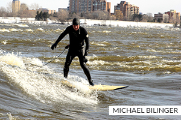
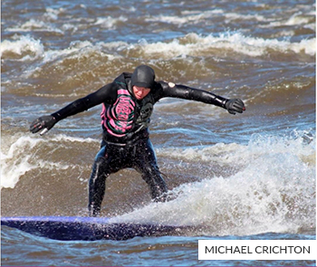
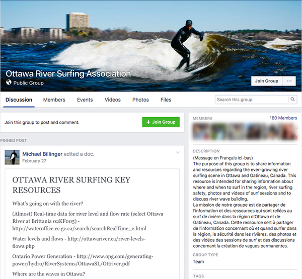

Sewer Surfing
Surfing on the Ottawa River
Video courtesy of Skyward Kick Production Blog
The History of the Wave
Michael Billinger walks to the edge of the water. It’s minus 15 degrees Celsius — freezing to most — but the water level is high and that’s all that matters to him.
He steps into the Ottawa River, holding his surf board by his side, takes three steps and launches himself, stomach flat to the board while he paddles out.
He holds onto the wake cord and pulls himself up until he has his balance, then lets go — he’s riding the sewer wave.
The sewer wave is one of three major waves Ottawa river surfers ride, located on the Gatineau side of the Ottawa River. Its name comes from the running water splashing over a sewer drain near the shore.
The sewer wave is the easiest, one that beginners love. Its proximity to the shore makes it the most accessible to amateurs.
Along with the sewer wave, there is Bate Island, also referred to as the Champlain Bridge wave. Billinger says the Bate Island wave is for experts only, as it is the most difficult.
The final wave is the desert wave, also known as “dessert wave.” Billinger says it is called dessert because it’s formed from the rolling rapids of the Bate Island, and is almost like a treat after the main “meal” at Bate.
“It’s like icing on the cake, because it’s a really big nice wave,” he says.
Billinger is one of the veterans who surf the Ottawa River, discovering it six years ago. However, his surfing journey didn’t start in Ottawa. It didn’t even start in North America.
Billinger learned to surf in Argentina, and he still remembers his first wave he rode — he says the feeling was irreplaceable.
“Especially when you get one on your own, you’re just hooked, just totally hooked,” Billinger says with a smile.
The sport was first documented in Munich, Germany in the 1970s. The city embraces this history with a wave at the airport that passengers can surf on.
Billinger says river and ocean surfing have similarities and differences, all determined by the geography. The ocean has recurring waves, but river surfing relies on one constantly forming wave. Balance on the board is a similarity, but the difference is that while you are in one spot the whole time in the river, you’re constantly moving in the ocean.
Billinger then moved to Edmonton, where he was surprised to find he could continue surfing.
“There’s a really dedicated surf community in Edmonton,” he says.
Billinger says it isn’t just in Edmonton, it’s individuals throughout Alberta that are devoted to river surfing. This includes making adjustable artificial waves in Calgary through fundraising and lobbying various levels of government.
“They are doing a lot of really innovative ways of creating new waves,” Billinger says. “That’s one of the things we’d like to see happen here in Ottawa.”
Alberta’s surf community is part of an official group, The Alberta River Surfing Association (ARSA). Being an organization, the ARSA has uniform safety regulations and scheduled surf times.
Billinger moved to Ottawa in 2010 and wanted to keep surfing, so he searched the internet to find good spots.
“I was looking up some videos on YouTube and saw there were some videos of people surfing here”
From there he messaged Michael Crichton (left), a veteran Ottawa River surfer, asking to join him when the spring melt occurred.
“[Crichton] took it upon himself to contact me when that happened and say, ‘Hey we’re going, come on out,’ ” Billinger says.
Crichton’s been surfing every summer since he was a child, when his family would take him and his brothers to North Carolina.
“I absolutely remember my very first wave that I caught,” Crichton says with a laugh. “It was right before dinner, the sun was going down… I remember getting up on the wave, standing there, maintaining the balance and being like, ‘holy crap, I’m surfing.’”
Crichton took his love of surfing to the Ottawa River. He says he can’t remember the exact time surfing started on the river, but believes it to be at least 20-25 years ago at the Champlain Bridge.
Steven Perreault, Ottawa River surfer and employee at Surf Side, Ottawa’s only surf store, says the first to discover the waves were kayakers.
“The surfable spots are all by the kayaker’s holes, [which are] a standing wave that folds over on itself,” Perreault says.
A new and growing sport, but one not without its dangers. Perreault says he has received several injuries from river surfing, but nothing serious.
“I have some decent little scars and bumps ,” Perreault says of his surfing accidents.
He says there are risks in the river that don’t exist in the oceans, such as rocks when the water level is low, as well as floating chunks of ice. Billinger says safety should be the most important component to new surfers, and that starts with the right gear.
“They need the right equipment,” Billinger says. “In terms of wetsuits, gloves and boots… We recommend new surfers wear helmets.”
Although talking up the equipment may sound like a sales pitch, Billinger says when in cold water hypothermia can set in a matter of minutes and only the proper equipment can prevent that.
Crichton says new surfers must also ensure the water level is high enough, as when it’s too low there is a large possibility of hitting rocks.
Billinger says he considers himself lucky, as he has never had a serious injury from surfing. He credits that to taking the proper precautions.
Despite the risks, Billinger says surfing on the river is his favourite part of the day.
“All the work and stress and everything is just out of your mind when you’re surfing, it’s just relaxing and you’re with your friends,” Billinger says.
Subarctic Surf Side
A customer walks into Surf Side, Ottawa’s only surf store. She isn’t a surfer, but a kayaker who plans to travel a river in the Northwest Territories. Although she doesn’t practice what the store is named after, she receives extensive aid from store owner, Alex Millen.
He helps her find the proper wetsuit for the cold Arctic river, listens to her story of past rivers she’s kayaked and shares some of his own stories. She leaves with a new wetsuit and some advice for her upcoming trip.
Located in the west end of Ottawa, Surf Side is 35 years old, started by Millen and his father Rick.
Originally a windsurfing shop it embraces all types of board sports, including windsurfing, skateboarding, kiteboarding, waterskiing, wakeboarding and snowboarding.
“Pretty much anything with the word boarding on the end of it, we do it”
The store has a long history of serving non-motorized sports. Surf Side doesn’t look like something that would be found in a city away from the ocean — the walls are covered by various surf company stickers and boards of all kinds.
“[It’s] pretty much your California board shop. We try to keep that vibe,” Millen says.
Not only does Millen sell the equipment, he uses it as well. He has been surfing for a long time, but it’s only in the past two years that he began river surfing.
“Actual surfing, I tried it a few times, never really mastered it, but for the past few years I’ve been doing the Ottawa River standing wave surfing,” Millen says.
Millen surfs with his co-worker Steven Perreault, something Perreault says is convenient, as it’s best not to surf alone.
The store is stocked with the necessary equipment for Ottawa’s river surfers, including wetsuits, gloves, and boots. River surfers wear six-millimeter-thick wetsuits to protect themselves from the cold.
Board
Wakeboard Rope
Leash
Gloves
Boots
Perreault explains river surfers need the equipment because temperature is a major danger when surfing.
However there is an issue preventing all surfers from owning proper equipment — the cost.
Millen says he enjoyed wakeboarding, but the sport is impossible to do without owning a boat. Although river surfing is cheaper, it’s still expensive.
Surf boards range from $300-1000.
Wetsuits can be between $200-500.
A leash that ties the surfer to the board is around $40 and gloves and boots are sold separately for around $50.
The price to get started is somewhere between $600-$1,650.
That doesn’t cover the damage the board is likely to sustain from rocks and ice, which would cost $40-100 to repair.
However, veteran river surfer Michael Billinger says there are ways around this. Members of a Facebook group of experienced surfers are willing to lend their equipment to newcomers. Perreault has also begun a rental program at Surf Side.
The store has had a large impact on the surf community in Ottawa.
Millen is happy with his store’s role in the surfing community, but understands it would be bigger in another area.
“Obviously if there was an ocean right there and a lot of big waves, there’d be a lot more surf boards,” he says. “Maybe I would’ve retired with a big stack of money.”
Second Annual Surf Jam to be Scheduled for April
Last year, Ottawa hosted its first river competition, called the First Annual River Surf Jam at Bate Island. Various competitors and organizers consider the competition to be an important part of building up the surf community.
Organizers of the 2016 Ottawa Surf Jam says they are planning to host the event once again.
The First Ever Ottawa Surf Jam took place at Bate Island on April 23, 2016, with around 20 competitors and 200 spectators.
“We’ve just been in talks with getting one planned around the same time for this year”
The competition split the surfers into five different heats. They were granted a block of time — around 25 minutes — to attempt as many difficult tricks as the time allowed.
The surfers were judged based on degree of difficulty, maximizing usage of the wave, and quickness in getting up on the wave. The top two from each heat moved on, and the final 10 whittled down until there was a winner.
Ottawa’s Dave Crichton, brother to Michael Crichton, defeated two surfers from Montreal.
“Dave Crichton is probably the best river surfer in Ottawa”
Crichton’s brother Michael credits him for his skill in the sport.
“In terms of skill level and degree of difficulty in tricks, he’s kind of head and shoulders above everyone locally,” Michael says.
Crichton took home a surfboard as first prize, but Perreault says nobody left empty handed, as everyone received something from a sponsor, such as a gift card or waterbottle.
Michael Billinger, one of the judges from last year’s tournament, says it had a laidback style so he also made sure to take in the amount of fun the surfer had. He credits one surfer for trying tricks way out of his comfort zone.
“That’s the kind of stuff you want to see because it was the first year and it was a really fun event,” Billinger says.
But there were some challenges. The warm winter allowed for high water levels in early spring, but a sudden dry spell almost stopped the competition.
“[Bate Island wave] disappeared when our competition was going to be, but then it miraculously came back,” Millen says.
The wave at Bate Island disappeared a few days before the scheduled competition, but reappeared the day before. Perreault says he’s not as confident they’ll have the same luck a second time.
“This year [has seen] much lower water levels, we’re not actually sure it will happen at Bate"
They say they will consider other waves to see if they’ll work as well for the Surf Jam. Billinger says the surf competition got the sport some exposure, but they need more prominent competitors. Unfortunately, he says Ottawa’s community isn’t there yet.
“I think really what we’d like to do in terms of competition and exposure, putting us on the map really is get some pros out and see what they can do,” he says. “But we don’t have the connections yet.”
A Community’s Curiosity
The Toronto Star recently published an article about a community that surfs in Lake Ontario throughout the winter months. The story talks about the increase in popularity, but it doesn’t mention the issues attached to this growth.
Michael Crichton, a veteran river surfer in Ottawa, says lake surfing in southern Ontario has gotten so popular it’s become overcrowded.
“It’s gotten so crazy that if the wind is right, you go to some of these spots and it’s too crowded,” says Michael Crichton.
Crichton says that’s not a problem in Ottawa yet, but the numbers have been rising. In 2008, less than a dozen people were surfing the Ottawa River—that number is now around 50.
“It’s really starting to get popular in the last two, three years,” says Alex Millen.
Michael Billinger says the growth led him to create a Facebook group. It now has 174 members.
“We started the Facebook group as a way to get safety information out there because we saw a lot of bad practices”
These bad practices include not using the proper equipment, going out when the water level is too low and surfing alone.
Crichton says the right equipment is the most important concern for new surfers.
“It’s very serious,” Crichton says. “If you go out there and get into trouble and you don’t have the right gear on, you could get hypothermia in two minutes.”
Crichton also says it’s important never to surf alone.
“That’s why we always recommend to people, if they’re going to try river surfing for the first time, go with other people,” Crichton says.
Sarah Bureau (left) is a new surfer attracted by the Facebook group.
Bureau first tried ocean surfing in 2016 when she went to New Jersey. Back in Ottawa, she searched the internet to find out if she could surf at home. She found the Facebook group, and took a river surfing class in Montreal.
“It was fun, but it was also really hard. The current was really strong. It wasn’t like ocean surfing,” she says.
She says the differences between river and ocean surfing are in the wave. Ocean surfing you’re always moving whereas river surfing you’re in one spot.
Bureau now has all her equipment and is finally ready to try it in the Ottawa River.
“I’m really excited about this sport, I’ve done nothing like it so it’s really new for me”
However, she won’t be trying it until the later spring, taking advice from those on the Facebook group and waiting for the water level to rise.
While Ottawa’s river surfing only recently started growing in popularity, Montreal is different.
“It’s interesting, it was small in Ottawa but in Montreal it had already blown up,” Crichton says.
Crichton says this is likely because of Quebec’s proximity to the ocean, but also in the water level. Montreal’s water level on the St. Lawrence remains high throughout the year, making it accessible in the summer and increasing its popularity.
“People are out there in bikinis,” Crichton says.
Montreal isn’t alone, as Billinger says Alberta’s river surfing community, the Alberta River Surfing Association, has a well organized system. The group has managed to lobby various levels of government to create artificial waves.
Billinger says most cities in Europe have also established river surfing spots, as the sport originated in Germany.
Billinger says the Ottawa community isn’t at that stage yet, but it isn’t off the table in the future. The sport hasn’t gone unnoticed by the city’s politicians.

Jody Mitic, Ottawa City Councillor and Sports Commissioner says the sport is a good way of staying active while outside.
“This sport is a fun and creative way of using the natural environment in a new way to simulate surfing in a region where there is no access to a large body of water, like a lake or an ocean for traditional surfing,” Mitic says in an email.
He adds how the competition is a good way to bring outdoor enthusiasts together.
“This competition, like any sporting competition, is beneficial to the citizens of Ottawa as it gives individuals who already love the sport to come together. [It] also provides an opportunity for other sport enthusiasts to try something new,” he says. “Ottawa is known for its green space, so any area that can be safely used for physical activity is a plus to the city.”
Although the growth is good for the sport, Billinger and Crichton still worry about overcrowding. They say Toronto’s lake surfing exemplifies the issue with this.
“You’re seeing a lot of localism on the lakes, like ‘this is our spot, don’t come here,’ ” Billinger says. “That’s always the issue, if it gets too big, then you might see people getting frustrated with the crowds.”
River surfing, a new but growing sport in the Ottawa area, has made major strides in popularity over the past three years. From a group of 15 people going out to catch a wave, to a community of more than 50 that continues to grow.
The growth is partially a result of a recent Facebook group, and the popularity of the first surf competition hosted last year. Being a water sport in sometimes shallow, fast-moving water, several of the surfers say the proper equipment is critical for safety.
Surfers are able to get this equipment at the city’s only surf store, Surf Side, one of the sponsors and organizers of the surf competition. Although the sport is still relatively small, the speed of its growth could be a concern.
There are examples of overcrowding with surfers on the Great Lakes. Michael Billinger said he hopes Ottawa takes a different route than the lake surfers. He’d prefer it be more like the surfing community in Edmonton, which is an official organized group — but he says that will take time.